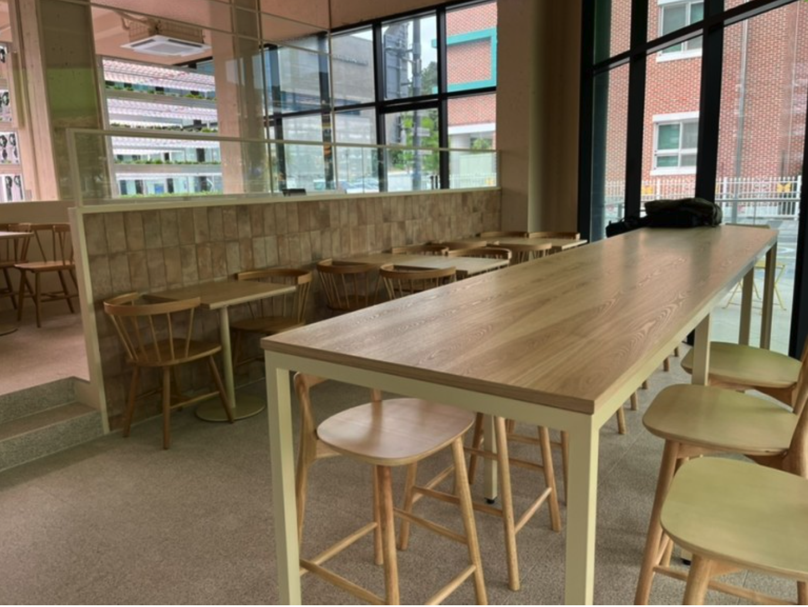

서울시 세곡동의 아름다운 산들과 한적한 자연 속에 위치한 우리 스마트팜 기반 샐러드 가게는 도심에서 벗어난 휴식처를 찾는 이들에게 완벽한 선택입니다. 이 매장은 자연을 닮은 따뜻한 분위기로 고객들을 맞이하며, 건강한 라이프스타일을 위한 신선한 샐러드를 선사합니다.
세곡동의 우리 매장은 혁신적인 스마트팜 기술을 도입하여 지속 가능한 농업 방식으로 성장한 신선한 채소로 만든 샐러드를 제공합니다. 도시와는 다른 고요한 분위기를 느끼며 힐링하고 싶은 분들에게 이 매장은 이상적인 휴식처가 될 것입니다.
세곡동의 이 멋진 매장에서, 세계적인 디자인상을 수상한 MOOTAA 팀의 독특한 인테리어와 함께 건강한 샐러드를 즐기세요. 도심에서 벗어난 자연 속에서 최상의 신선함과 건강한 라이프스타일을 경험해보실 수 있습니다. 서울같지 않은 이 동네에서, 우리 스마트팜 기반 샐러드 가게와 함께 신선한 한끼를 만끽하며 힐링의 시간을 보내세요.
